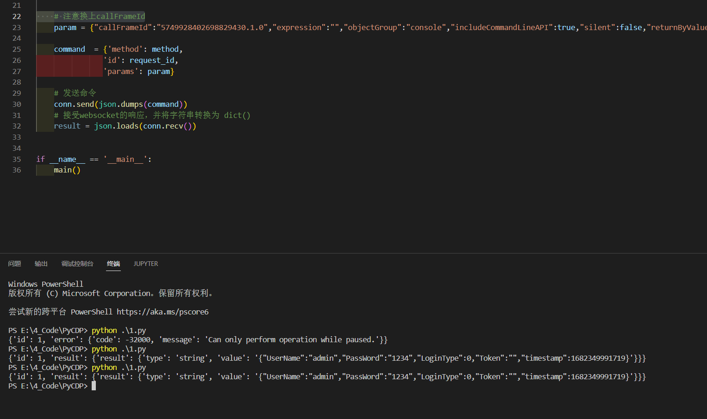

屁话
在面对前端加密http参数的时候，如果需要解密，以前我一直是两步：
- 首先在js代码中找到加密逻辑，这一步一般比较快，通过搜索加密关键字比如text，data，或者encode，encrypt等，然后全部打上断点，一步一步分析。如果没找到关键字就麻烦一点，只能硬着头皮看。
- 第二步一般是比较蛋疼的，在找到加密逻辑后，就需要在本地还原js代码以实现在bp或者python中调用，碍于js代码的层层嵌套结构，这一步往往花费了最多的时间和精力
但是如果把断点停在调用加密函数前，在浏览器的console中就可以运行加密代码。如下
1处是加密参数的代码。2处是我在console中进行调用，可以看到完成了加密，但是加密代码 m.encode((0,o.default)(s)) 只能在断点停在这一步时才能运行。所以现在需要做的就是把浏览器停在这里，然后借助cdp远程运行代码。
操作
（前提：需要先手动找到加解密代码并且在浏览器中测试成功）
1
需要一个chrome浏览器，找到文件位置，使用以下命令启动
1 | \chrome.exe --remote-debugging-port=9222 --user-data-dir="C:\Users\This_is_Y\Desktop\test" --remote-allow-origins=http://127.0.0.1:9222 |
–remote-debugging-port ： 启远程调试，端口9222和我们之前转发出来的端口一致
–user-data-dir ：设置独立的文件保存目录，建议一个网站一个目录
–remote-allow-origins ：允许远程调试
启动浏览器后，在设置中开启并打开protocol monitor，
确保控制台抽屉栏中出现了protocol monitor或者协议监视器
这一步主要是为了获取一个参数callFrameId（或者objectID）
2
在确认protocol monitor启动后，访问网站，下好断点，然后让流程停在断点前。可以先在浏览器中测试，看看加解密代码能不能正常运行，如图，
然后打开http://127.0.0.1:9222/json，找到目标网站的webSocketDebuggerUrl
3
python代码如下：
1 | import json |

注意事项
1.Handshake status 403 Forbidden
这一步卡了我非常久，打算写细致一点。在运行别人的代码的时候，发现一直报错
1 | websocket._exceptions.WebSocketBadStatusException: Handshake status 403 Forbidden |
唯一一个有帮助的就是在**websocket.create_connection()前加上websocket.enableTrace(True)**查看数据包细节。这引导我使用wireshark去抓包查看原始数据包是什么样子
然后在wireshark中发现了这个。可以看到右边的提示信息
1 | Rejected an incoming WebSocket connection from the http://127.0.0.1:9222 origin. Use the command line flag --remote-allow-origins=http://127.0.0.1:9222 to allow connections from this origin or --remote-allow-origins=* to allow all origins. |
在简单查了点资料和测试下，我在浏览器启动的时候加上了**–remote-allow-origins=http://127.0.0.1:9222** 参数，才解决问题
2.callFrameId
在发送cdp命令的时候，需要用到callFrameId参数，这个参数我还没找到怎么使用代码自动获取，先留个坑
参考
https://1oid.github.io/2023/02/15/frontend-encrypt-crack-cdp-debug-function-eval/
https://chromedevtools.github.io/devtools-protocol/tot/Debugger/
https://blog.csdn.net/freeking101/article/details/110213782